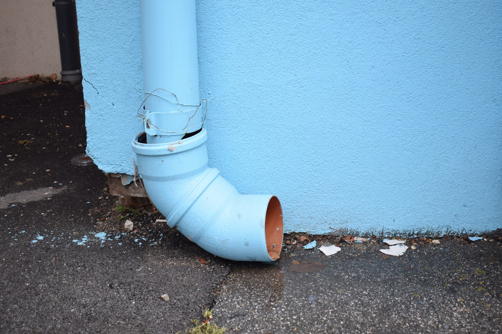

Water extraction is the most critical first step in any water damage restoration project. The faster standing water is removed from your property, the less damage occurs to structural materials, flooring, personal belongings, and building systems. Every hour that water sits on surfaces, it penetrates deeper into materials — soaking through carpet into padding, wicking up drywall, saturating wood framing, and seeping into subflooring. Yakima Restoration Co provides emergency water extraction services throughout Yakima using industrial-grade truck-mounted and portable extraction equipment capable of removing hundreds of gallons per minute.
Our truck-mounted extraction units are among the most powerful water removal systems available, generating superior suction force to pull water from carpets, hard floors, and structural materials far more effectively than any consumer or rental equipment. For areas inaccessible to truck-mounted hoses, we deploy powerful portable extractors, submersible pumps, and specialty tools designed for specific situations including water trapped in wall cavities, between floor layers, and in confined spaces.
Professional water extraction is not simply about removing visible standing water. Our IICRC-certified technicians use moisture detection equipment to identify water that has migrated into hidden areas — behind baseboards, inside wall cavities, under cabinets, and beneath flooring materials. Specialty extraction tools are used to remove as much moisture as possible from these hidden areas before the drying phase begins, significantly reducing the time and equipment needed for complete structural drying and minimizing the risk of secondary mold growth.

When to Call for Water Extraction in Yakima
Catching these issues early helps you avoid costly problems and protect your property. Here are the most common indicators that it's time to call a professional:
- Standing water on any floor surface from any source
- Saturated carpeting that squishes underfoot or shows water pooling
- Water flowing or dripping from ceilings, walls, or fixtures
- Water visible in crawl spaces, mechanical rooms, or utility areas
- Flooded window wells or stairwells allowing water entry
- Water accumulating from fire suppression system discharge
- Active leaks from plumbing, appliances, or HVAC systems
Act Before It Gets Worse
Many water damage problems start small but can escalate quickly into costly emergencies. If you notice any of these signs, contact Yakima Restoration Co at (657) 505-1189 for a prompt evaluation.
Water Extraction Issues? We Can Help.
Get a free estimate from our expert team today.
Call (657) 505-1189 TodayFrequently Asked Questions About Water Extraction
Why Professional Water Extraction Matters
The speed and thoroughness of water extraction directly determines the extent of damage to your property and the cost of restoration. Professional truck-mounted extraction equipment removes water hundreds of times faster than consumer tools — what might take you an entire day with a shop vacuum, our equipment accomplishes in minutes. This speed difference is not just about convenience; it's about preventing thousands of dollars in additional damage that occurs with every hour water remains in contact with building materials.
Professional extraction also addresses moisture that you cannot see or reach with consumer tools. Water travels through capillary action into carpet pad, up drywall via wicking, along electrical conduits and plumbing lines, and between flooring layers. Our specialty extraction tools and techniques target these hidden moisture deposits, removing significantly more water than surface extraction alone. This thorough approach reduces drying time, lowers equipment costs, and most importantly prevents the hidden mold growth that results from trapped moisture.
What to Expect From Our Water Extraction
We follow a proven process to ensure every job is completed to the highest standards. Here's how we handle water extraction from start to finish:
Rapid Response
Our extraction crew arrives quickly with truck-mounted and portable extraction equipment ready for immediate deployment. We assess the situation and begin extraction within minutes of arrival.
Standing Water Removal
Truck-mounted extractors remove large volumes of standing water from floors, carpets, and surfaces. Submersible pumps handle deep water in basements and crawl spaces.
Detailed Moisture Extraction
Specialty tools extract moisture from carpet fibers, pad, upholstery, wall cavities, and hard-to-reach areas. The more moisture we extract mechanically, the faster your property dries.
Transition to Drying
Once maximum extraction is achieved, we position commercial dehumidifiers and air movers for structural drying. Moisture readings establish baselines for monitoring drying progress.
Questions About Water Extraction?
Call Yakima Restoration Co to discuss your water extraction needs with a IICRC-certified technician.
Get Help: (657) 505-1189How to Prevent Water Extraction Problems
A little prevention goes a long way in avoiding expensive restoration emergencies. Follow these tips from our IICRC-certified technicians:
- Know the location of your main water shutoff valve and label it clearly
- Keep a basic emergency water kit: old towels, bucket, and your restoration company's number
- Install automatic water shutoff valves that detect leaks and stop water flow
- Regularly inspect under sinks, around toilets, and near appliances for early leak signs
- Ensure your home has working water leak detection sensors in critical areas
- Maintain appliance supply lines and replace hoses that show wear or age
- Program (657) 505-1189 into your phone so you can call immediately in an emergency
Should You DIY or Call a Pro?
While some minor restoration tasks can be handled by handy homeowners, most water damage work requires professional expertise, specialized equipment, and proper safety training. Here's a comparison:
| Factor | DIY Approach | Professional Service |
|---|---|---|
| Extraction Power | Shop vac: 1-2 gallons per minute | Truck-mount: hundreds of gallons per minute |
| Speed | Hours to remove moderate water | Minutes for the same volume |
| Thoroughness | Surface water only | Extracts from pad, walls, subfloor |
| Equipment Cost | Rental fees add up quickly | Professional equipment included in service |
| Damage Reduction | Slow removal means more damage | Fast removal minimizes total damage |
| Follow-Through | Extraction alone doesn't prevent mold | Seamless transition to professional drying |
Get Water Extraction Help Today
Don't let water damage problems get worse. Call Yakima Restoration Co now for prompt, professional service.
Call (657) 505-1189 Now